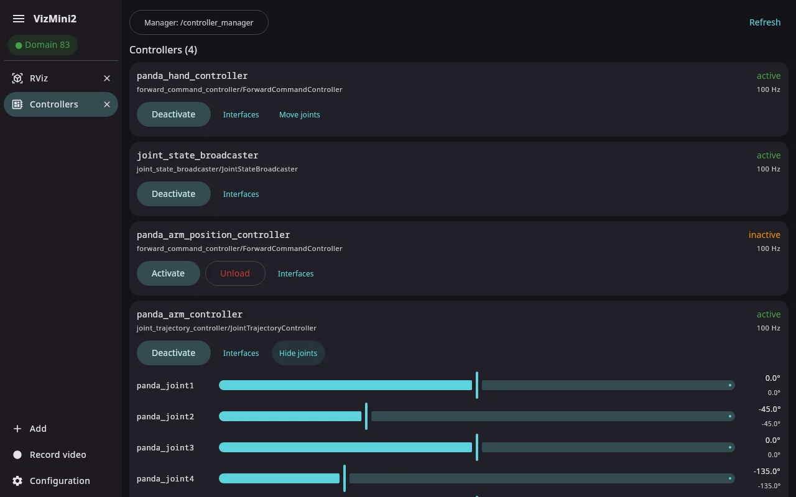

Switch and command ros2_control controllers
Goal: see a robot’s ros2_control controllers, switch them like ros2 control
switch_controllers, and move its joints by hand. With the Panda demo of Move an arm with MoveIt (it runs on
ros2_control with mock hardware) or any robot with a controller_manager.

Start your robot, or the Panda demo:
ros2 launch moveit_resources_panda_moveit_config demo.launch.py
Add a Controllers tab with +. It finds the controller manager by itself (
/controller_manager; Manager chooses another one, for example under a namespace) and lists each controller with its type, state and update rate. Refresh reads them again.Tap Interfaces on a controller to see which command interfaces it claims and which state interfaces it reads; the Hardware section lists every interface and who has it.
Deactivate
panda_arm_controllerand Activate it again. If two controllers use the same joints, the app offers Switch: the old one is deactivated and the new one activated in one step, asros2 control switch_controllersdoes.Tap Move joints on
panda_arm_controller(aJointTrajectoryController): one slider per joint, starting at the current position. Drag them and tap Send, or tick Send while dragging; Time sets how long the motion takes. Current copies the robot’s position back and Zero puts every slider at zero. Forward command controllers (positions, velocities, efforts) get the same sliders.Controllers declared in the manager’s parameters but not loaded appear under Declared but not loaded, with Load; an inactive one can be Unloaded.
The message version of controller_manager_msgs (Foxy, Humble, Jazzy, Kilted / Lyrical) is detected by
itself. More in Controllers.
Warning
On a real robot, Send moves the joints for real: start with a short distance and a long Time.